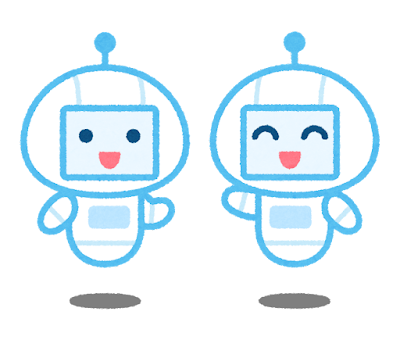
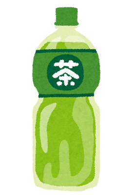

| 1940年代~ | AI考案の始まり |
|---|---|
| 1950年代後半~1970年代 | 第一次AIブーム到来 |
| 1980年代~1990年代 | 第二次AIブーム到来 |
| 2000年代~現在 | 第三次AIブーム突入 |
-
AI考案の始まり

-
第一次AIブーム到来
-
第二次AIブーム到来
-
第三次AIブーム突入

AIの概念は、イギリスの数学者アラン・チューリングが1950年に出版した著書『計算する機械と人間』に起源がある。
しかし、初めて『AI』という言葉を現在のように『人間の脳に近い機能を持ったコンピュータープログラム』と定義したのは、1956年、アメリカの計算機学者ジョン・マッカーシーだ。
コンピューターによる『推論』や『探索』が可能となり、特定の問題に対して解を提示できるようになったことがブームの要因だ。
スタンフォード大学で1970年代初めに5、6年の歳月をかけて開発されたエキスパートシステムのMycin(マイシン)だ。
Mycinは、かなり単純な推論エンジンを使い、500程度の規則からなる知識ベースを持つ。
医師に対して、単純な『はい/いいえ』で答える質問や何らかの文章で答える質問をいくつもして、最終的に犯人と思われる細菌名のリスト(確率の高い順)とそれぞれの信頼度、なぜそう推論したかという理由、推奨される薬物療法のコースを示す。
スタンフォード医学部での調査によると、Mycinの診断結果は65%の正しさであり、細菌感染の専門でない医師よりは良い結果だが、専門医の診断結果(80%)よりも悪かった。
実のところ、Mycinは責任面の問題で現場では決して使われなかった。
日本では、政府による『第五世代コンピュータ』と名付けられた大型プロジェクトが推進された。
『一般常識をデータベース化する』という壮大な計画のもと、ダグラス・レナートによって1984年に開始され、今なお続いているというCyc(サイク)プロジェクトだ。
Cycは、ほかのAIプラットフォームが当然と考えるような暗黙知に着目し、常識的な知識を獲得することを目的としている。
2001年からは知識ベースの一部がOpenCycとして公開されているようだ。
Cycでは、100以上のアプリケーションを出しているが、専門領域のものが多く、医療、製薬といった分野や、教育分野、テロに関する知識ベースであるテロリズム知識ベースといったものもあるようだ。
人のように対話できるロボットや、自動車の自動運転、さらにはプロ棋士を打ち負かした囲碁ソフトAlpha GOなど、AIのニュースがメディアで頻繁に取り上げられるようになった。
画像生成AIを活用したパッケージデザイン、『お～いお茶 カテキン緑茶』がリニューアル発売した例だ。
『商品デザイン用画像生成AI』は、株式会社プラグが開発したシステムで、テキストを入力するだけで、商品デザインの生成が可能となる。
『お～いお茶 カテキン緑茶』のデザイン開発において、AIを複数回活用して試行錯誤を重ねたようだ。
また、当社が提供しているAIが消費者の商品デザインへの評価を瞬時に予測する『パッケージデザインAI』を使い、どのデザインが消費者に好まれそうかを確認しながら、デザインを絞り込んだ。
株式会社伊藤園のマーケティング本部の方のコメントでは、『商品のデザインをお願いする際に、意図する内容を適切に言葉で伝えることの大切さと難しさを感じていたが、人間同士のコミュニケーションに生成AIという新たなツールが加わり、これまでとは異なる角度でクリエイティブを作り上げることができた。』と述べている。
商品デザイン用画像生成AIを活用するメリットは、短時間で大量の多様なデザインの生成が可能になり、デザインのアイデアの幅を広げることができることだ。
一方、『パッケージデザインAI』は、新商品、リニューアル商品の売上アップや、商品開発に携わる商品開発担当者やブランドマネージャー、デザイナーの業務効率化といったメリットを創出する。
『商品デザイン用画像生成AI』を開発した株式会社プラグは、社内にマーケティング・リサーチ部とデザイン部を有し、パッケージデザイン評価について、国内で有数の実績がある。